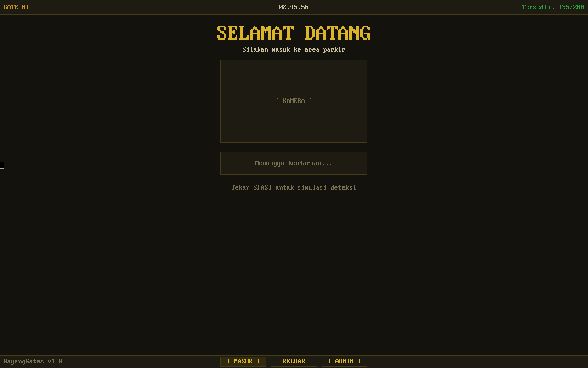
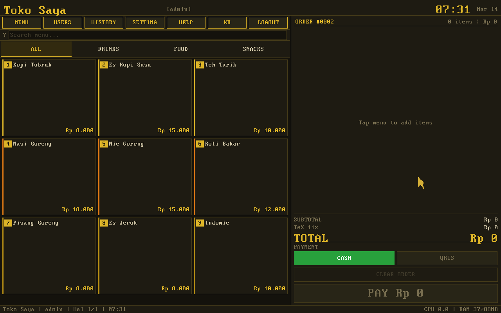
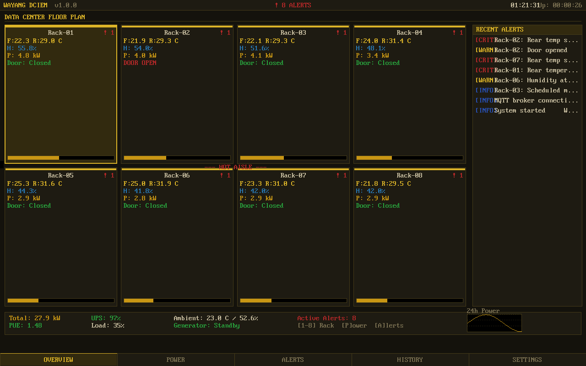
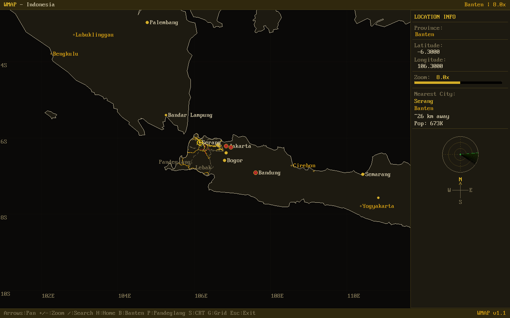
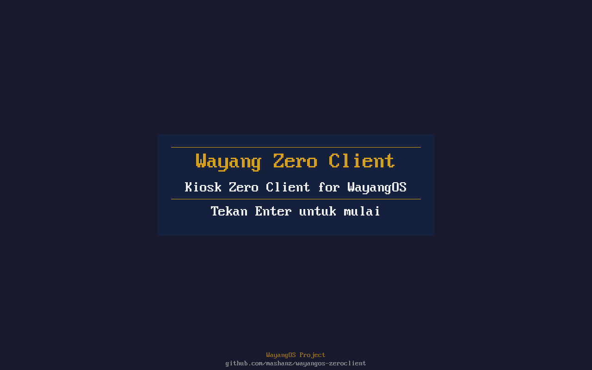
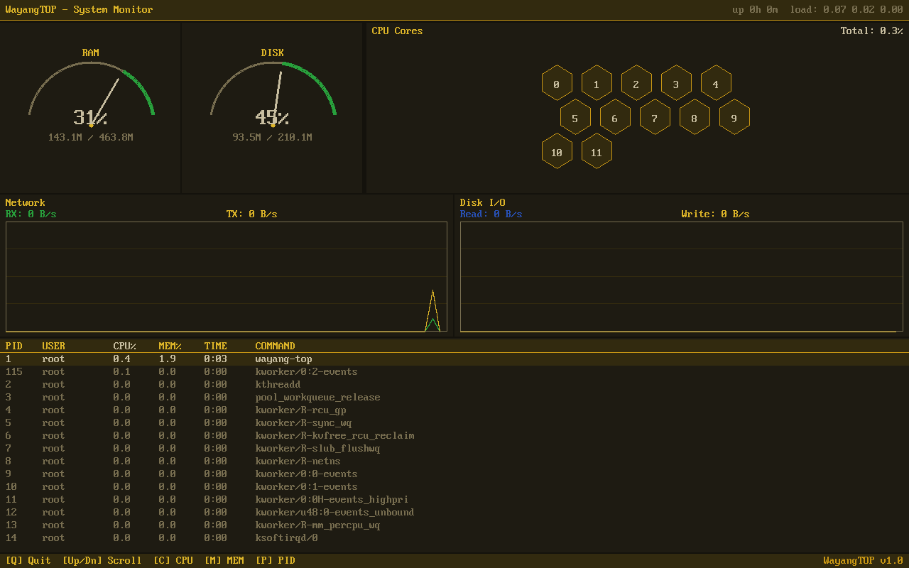
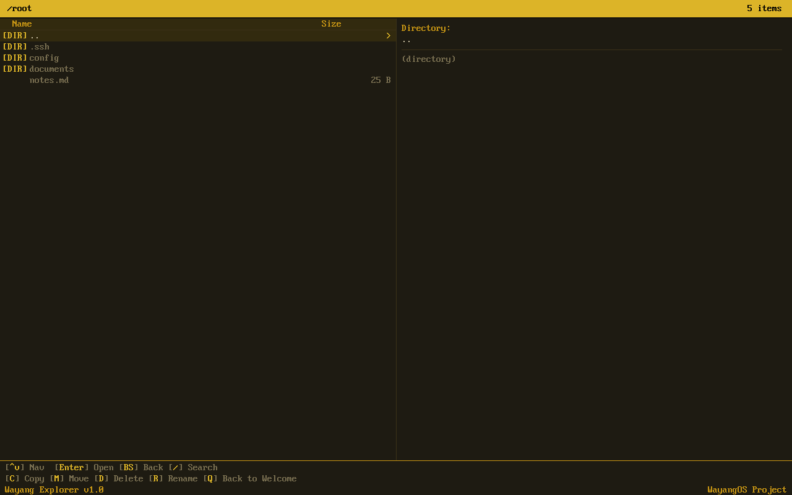
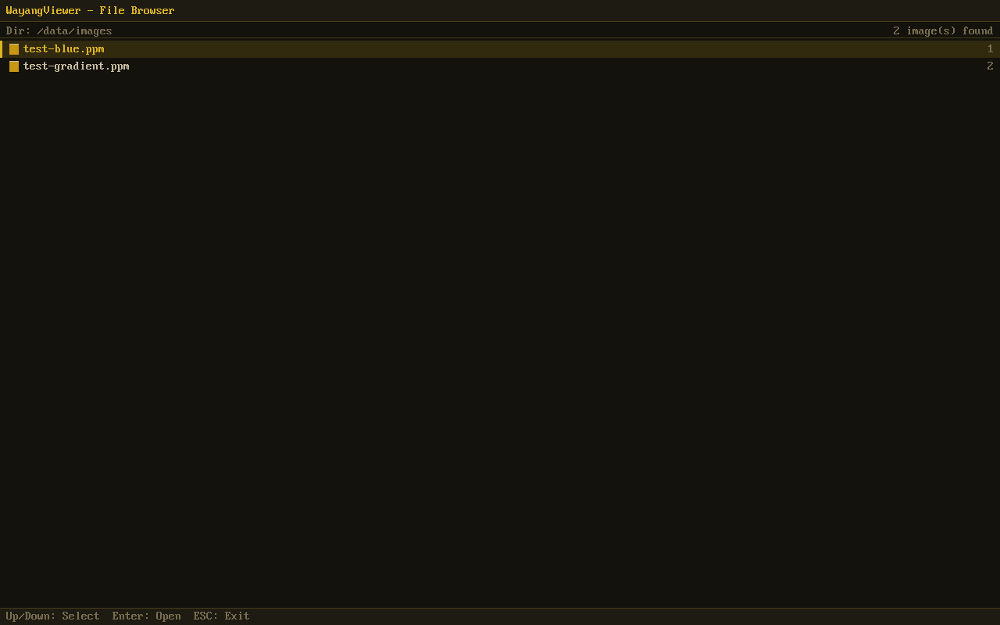
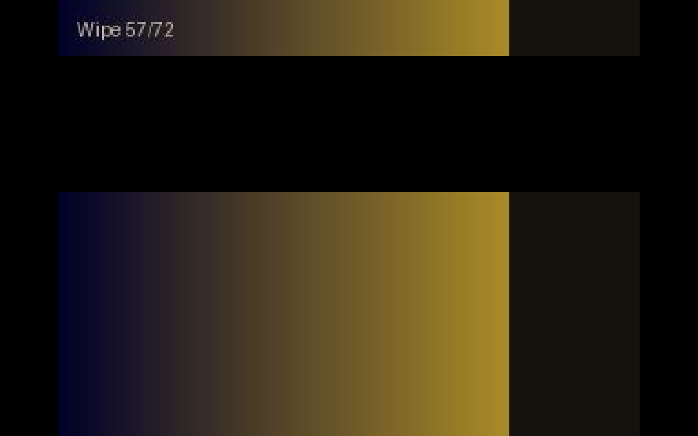

Production-ready applications built for WayangOS. Static binaries, zero dependencies, runs directly on hardware.
Designed to run on minimal hardware. Contact sales@dalang.io for licensing.
Smart Parking Gate System. Automated entry/exit with plate detection, thermal ticket printing, QR-based QRIS payment, admin dashboard with revenue reports. Turn any lot into a smart facility.

Complete point of sale system for shops, cafés, and stores. Touchscreen UI, receipt printing, stock management, discounts, CSV export.

Data Center Infrastructure & Environment Monitoring. Temperature, humidity, power, network status — all on one dashboard.

Interactive map display for visitor information, wayfinding, and asset tracking. Touchscreen-optimized with zoom, pan, and custom overlays.

RDP-based thin client. Boot from USB, connect to remote desktop. Zero local storage, zero configuration.

System resource monitor with real-time CPU, memory, and process display. Like htop but rendered to framebuffer.

File manager with directory browsing, file operations, and image preview. Rendered directly to framebuffer.

Browse and view images with zoom, pan, and multi-format support. Built-in file browser with amber/gold WayangOS theme. 946KB binary.

Play MJPEG AVI videos and image slideshows directly on hardware. Progress bar, seek, play/pause controls, file browser. 908KB binary.

Web kiosk browser for locked-down single-site browsing. Perfect for information kiosks, check-in terminals, and public displays.